Working React filter logic, shipped to engineers as the spec.
image / demo
This site
Astro, markdown-driven, built AI-natively end to end.
image / demo
Lab entry 3
Placeholder.
Want to get in touch? Drop me a line.
Tell me what you're building.
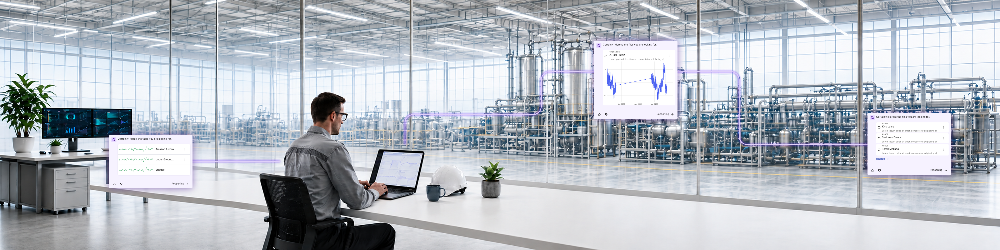
Designing for a system that guesses
A year designing Atlas AI, Cognite's agent platform for industrial data. Three features, one question underneath: how much of an AI system's state should the user see, manage, and take back?
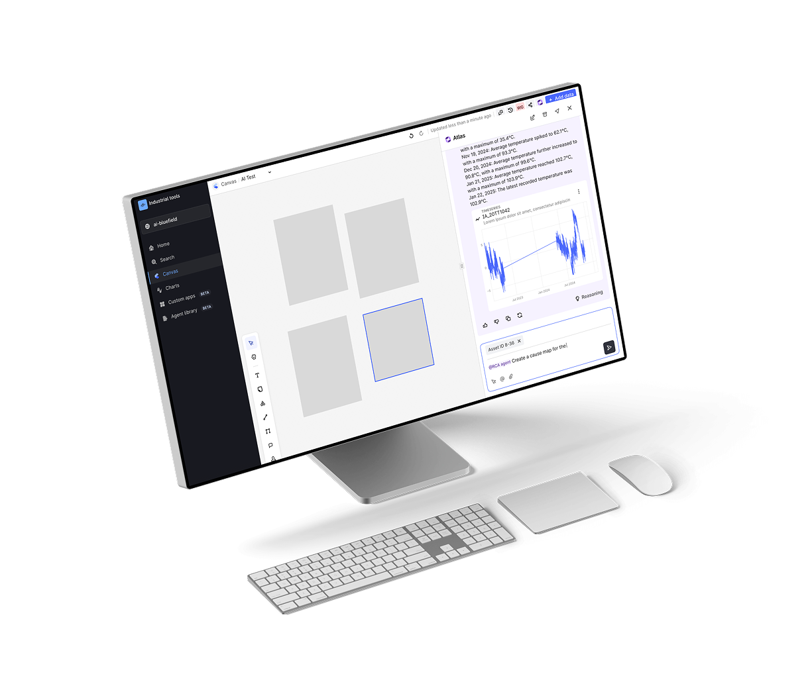
Atlas AI is Cognite’s agent platform for industrial data.
Reliability engineers, maintenance planners, and operations teams use it to interrogate the messy reality of a plant — work orders, P&IDs, sensor time series, maintenance histories — through AI agents that query and reason over that data.
Designing for agents turned out to be a different job than designing for software. Traditional software has state you can point at: this filter is on, this page is open. An agent’s state is mostly invisible and partly probabilistic — what it remembers, what it can see, what it will decide on its own.
3
Features shipped in a year
5×
Enterprise customer growth
7 / 7
Wanted their chat to persist
3 mo
Adoption target cleared early
01The framework
The question underneath
The line from manual to automatic
Almost every design problem I worked on that year reduced to the same question.
How much of the agent’s invisible state does the user have to see, manage, or take back?
Early on I sketched a spectrum to reason about it. At one end, the user tells the agent everything by hand — the sketch labels it “I don’t know unless you tell me.” At the far end, the agent works everything out on its own: “I know exactly just by listening.”
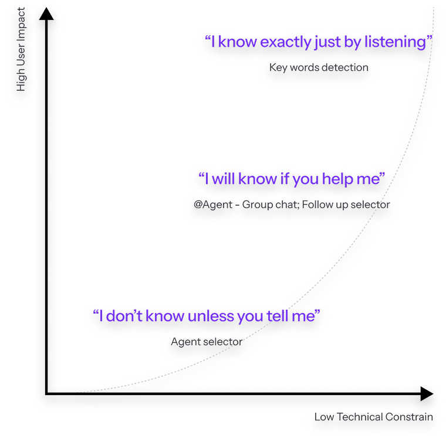
The manual-to-automatic spectrum — the framework behind all three features.
Every feature has an ideal position on that line, and a buildable position, which is usually further toward the manual end. A lot of my job was deciding where each interaction should sit — and what to protect when it couldn't sit where I wanted.
This case study follows three features, each dealing with a different part of what the agent holds invisibly. Session persistence is about the agent's memory. Context awareness is about its knowledge. The query tool configuration is about its freedom — the one feature where the right design was to let the model decide less, not more.
02Memory
Session persistence
One conversation, many agents
Atlas users work with multiple specialized agents — a root cause analysis agent, a work order agent, a data exploration agent. In the original design, the conversation belonged to the agent: switch agents, lose your chat.
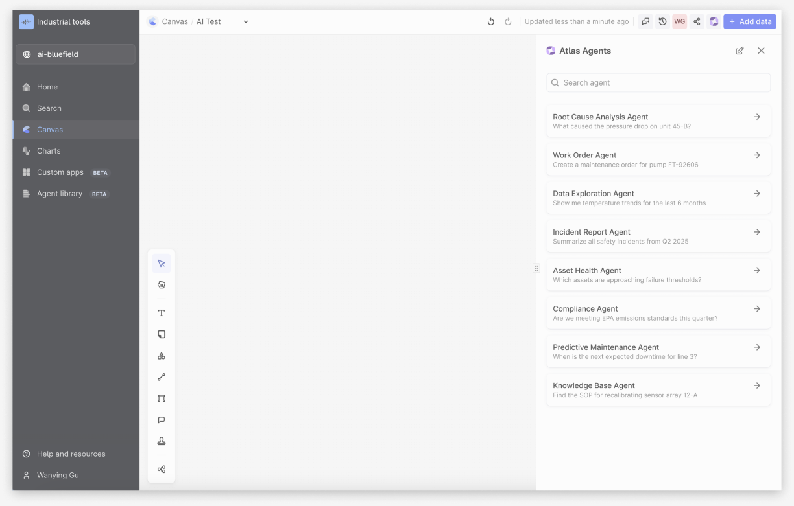
The existing Atlas Agents require user choose agents manually. Switch agents, lose your chat.
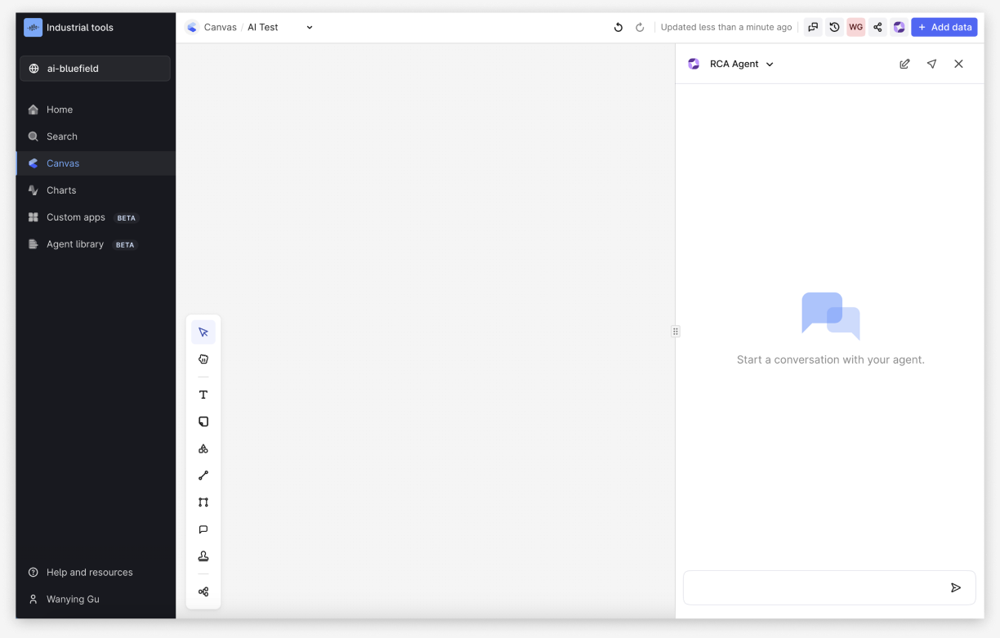
The PRD answered with two P0 requirements: persist the conversation, and add an agent selector at the top of the pane.
The PRD answered with two P0 requirements: persist the conversation, and add an agent selector at the top of the pane.
I suspected those two requirements contradicted each other, so I tested it.
I built paper prototypes — two interaction models, sticky notes standing in for dropdowns — and ran think-aloud sessions with seven participants, ten minutes each. Cheap on purpose: the question was about mental models, not visual design, and paper answers that faster than Figma.
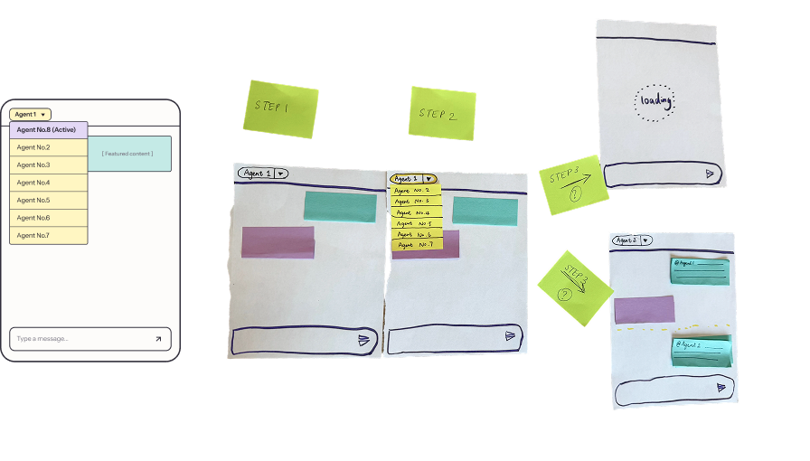
option 1
Selector on the top
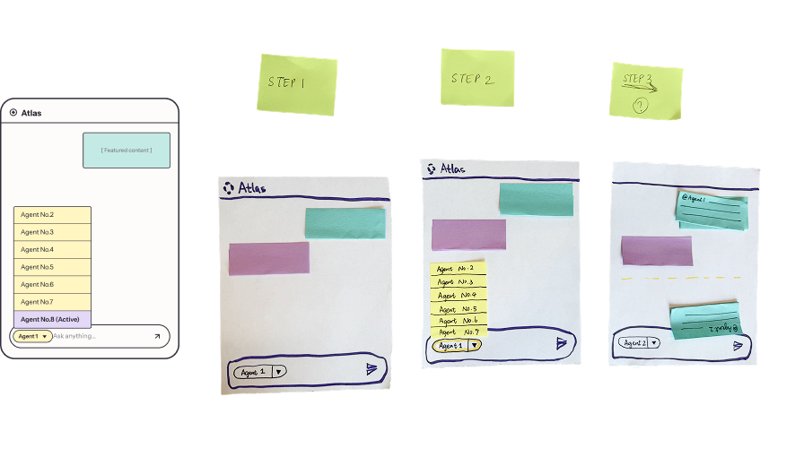
option 2
Selector in the bottom
7 of 7 wanted their conversation to persist. But 5 of 7 expected that switching agents via a top dropdown would erase it. The placement itself made a promise: a selector at the conversation level says the conversation is scoped to the agent.
The shipped model
Inverting the hierarchy
The conversation became the persistent container, and agents became participants inside it — selected at the message level, like addressing someone in a group chat. You can @-mention an agent directly when you know who you need, or take a suggested follow-up action and let the right agent pick it up without ever knowing its name.
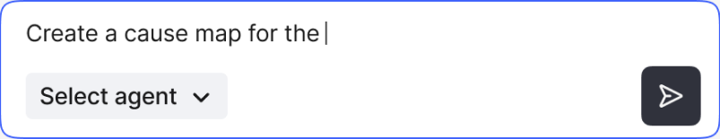
2025 Q2 Shipped
Selector in the bottom
It sets up the mental model cleanly: "the agent" is a fixed choice, and the conversation is addressed to whoever's selected.
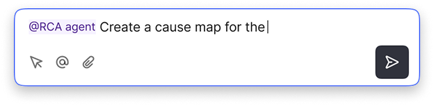
North star
Full context bar
Mental model maturing — agents stop being a setting you configure and become participants you address directly.
The feedback that mattered most arrived unprompted — a customer engineer at Rockwell wrote in to say the switching between AI agents was a fantastic new feature, in a thread our team only saw because he’d asked someone to pass the thanks along.
03Knowledge
Context awareness
I see what you see
The second feature brought agents into Canvas, Cognite’s visual workspace where engineers lay out P&IDs, documents, and asset data during an investigation. The requirement sounded simple: the agent should know what’s on the canvas. The design question was harder — should the user have to tell it?
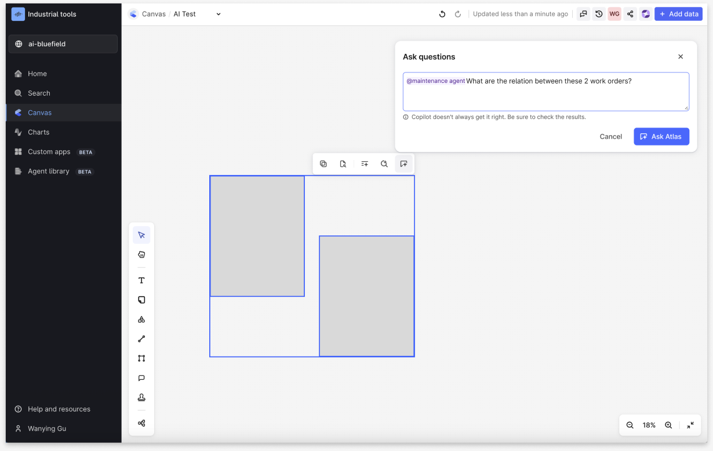
Working towards a fluent agent invocation from Canvas items.
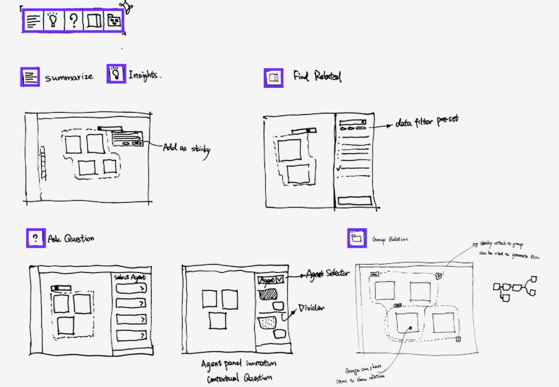
On my spectrum, the ideal sat at the far right: the agent simply knows, keyword detection routes intent, no configuration at all. The constraint axis pushed back. Real-time inference over canvas content depended on API capabilities that didn’t exist yet. The buildable version sat closer to the middle: everything on the canvas enters the agent’s context by default, and the user can scope it manually.
Trust in an AI system isn’t a feeling you design; it’s the byproduct of the system being verifiable.
That compromise created a transparency problem. If the agent silently knows everything, the user has no model of what “everything” is — and no way to catch it when the context is wrong. So the design centered on a context chip, permanently visible above the input: what the agent can currently see, by count and type, editable at any moment.
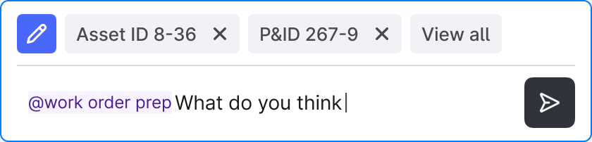
2025 Q3 Shipped
Context chip
Context chip and management. What the agent can currently see, by count and type, editable at any moment.
My flow diagrams from that period have the goal written directly on them — “I see what you see” before the user asks anything.
Exploration flows for canvas context: entry points, context management, and the two mental-model goals.
What I took from this feature is that the honest version of “AI-powered” is often a degradation path. You design the ideal, you design the constrained version that can actually ship, and you decide which quality survives the compression. Here, the thing worth protecting was the user’s mental model of what the agent knows. The inference can improve underneath later; the legibility had to be there on day one.
North star
The north star underneath
These first two features were never separate destinations — they were steps toward the same north star chat experience: one conversation that follows the user across every surface. So I designed a chat starts from an email notification, runs through multiple agents, carries its context between apps, and can be saved, left, and resumed days later with everything intact.
The shipped releases map onto it deliberately. Persistence covers the browser session today; durable, resumable conversations are the next step. Having the end state on the wall meant every release could be checked against one question: does this teach users a mental model we’ll never have to break?
The consistent chat experience: from notification, through multiple agents, to a saved, resumable session.
04Freedom
Query tool configuration
Where the agent must not guess
The third feature runs in the opposite direction from the first two. Atlas agents query industrial data through a tool called Query Knowledge Graph. Builders — the people configuring agents for their teams — were fighting it. The LLM assembled queries itself, which meant it sometimes picked the wrong filter property. Builders responded with ad hoc prompt engineering and Python workarounds.
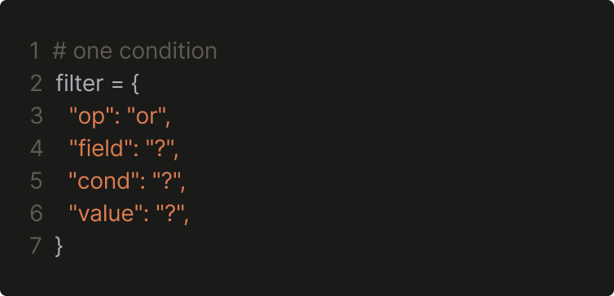
Before
Ad hoc scripts
A single hand-written condition, valid for one query, understood by one person, gone the moment the script is.
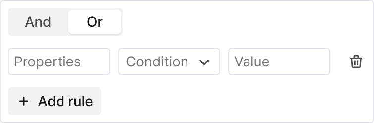
After
Structured, reusable UI
Same logic as a structured field — reusable across agents, enforced by the platform, and legible to a builder who’s never written code.
Builders needed to lock query parameters — filters, returned properties, sort order, limits — so the agent could still decide when to query and what to ask about, but never how the results come back. The initial scope stopped at raw JSON configuration; my design work was the interface that made those locked rules legible to people who don’t write query languages.
Handoff
Prototype as the spec
Filter logic is exactly the kind of interaction that dies in static specs — the behavior is the design. So instead of writing interaction documentation, I built working prototypes of the filter builder in React, generating the code with AI and directing it like a design tool, and attached them to the engineering ticket.
I iterate live with stakeholders by vibe coding, and handoff HTML in Jira.
Sketch
Prototype
vibe-coded
Iterate live with stakeholders
cover feedbacks
Handoff
coded prototype
Lovable
Gemini
ChatGPT
Cursor
Figma
Claude
Built, not described
AI native product design work flow
Engineers clicked through real nesting behavior, real mode-switching, real edge cases. Questions that would have taken a week of spec ping-pong were answered by opening a file.
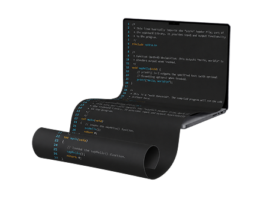
Vibe code
Behavior is the design, static design specs can not achieve
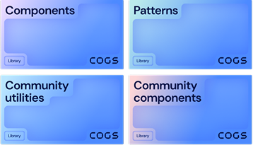
Company design system
Speak the same design language is the gap
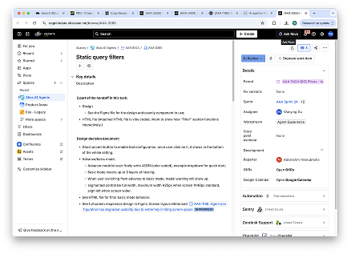
Jira final handoff
Full HTML file & UI component specs
ShippedNovember 2025 — and it completed the spectrum I’d sketched back in April, in a way I didn’t expect.
The QKG tool design stand alone as HTML that was handoff in the Jira ticket.
QKG taught me the line runs both ways. AI-native design isn’t maximizing what the model decides. It’s choosing, per interaction, what the model gets to decide — and building the interface that makes that boundary visible.
05Takeaway
In closing
What stayed with me
Before designing any AI interaction, place it on the line.
What must the user state explicitly? What can the system infer with help? What should it never infer at all? Session persistence moved conversation state into the system. Context awareness made the system’s knowledge inspectable. QKG fenced off the territory where guessing is failure.
By the end of that year, Atlas’s enterprise customer base had grown more than 5×, clearing its annual adoption target three months early. That growth belongs to the whole team — but the agent experience is the surface it happened on, every day.
The other thing that stayed is smaller and stranger: chat-shaped AI quietly made interfaces keyboard-driven again, and most of the craft of this year — @-mentions, follow-up actions, context chips riding above an input field — was really about designing what lives at the edges of a text box. For a discipline that spent a decade perfecting the click, that’s genuinely new terrain, and I’m glad I got to map some of it early.
A delivery-tracking app buried the one thing store owners opened it for. I cut the path to the answer, and rebuilt its worst screen around recognition instead of recall.
Ashley Furniture ships to thousands of independent dealers, and those dealers use an app called Ashley TNT to check where a delivery is.
It does one main job. A store owner has a customer asking about an order, opens the app, and needs the status of that delivery — fast.
The app I was handed made that job take seven taps.
I spent February to May 2024 on Ashley TNT as a Senior UX Designer, embedded through Capgemini/Sogeti in a seven-person team of Flutter engineers, a project manager, and a quality engineer. I ran standups three times a week and stakeholder check-ins every two weeks. The brief was a redesign of the delivery-tracking experience across versions 1.9 to 2.1, plus a refresh of the mobile design system.
7 → 3
Taps to a trip detail
~50%
Less time per search
11
Key screens rebuilt
16 + 5
Components & type styles handed off
01Understanding the problem
The path
The long way to a short answer
Before I changed anything, I mapped the existing path to a trip detail: sign in, then not one but two separate search pages, then an account page, then a location page — and only then the trip detail the user actually came for.
One screen in that chain was worse than the rest. Before the search would return anything, it asked the user to fill in five separate fields — the kind of form that assumes you already know the order number, the dealer code, and the date range.
But the person opening this app is usually looking because they don't have those details to hand. The form asked users to recall exactly what they'd come to find out.
Existing APP Audit
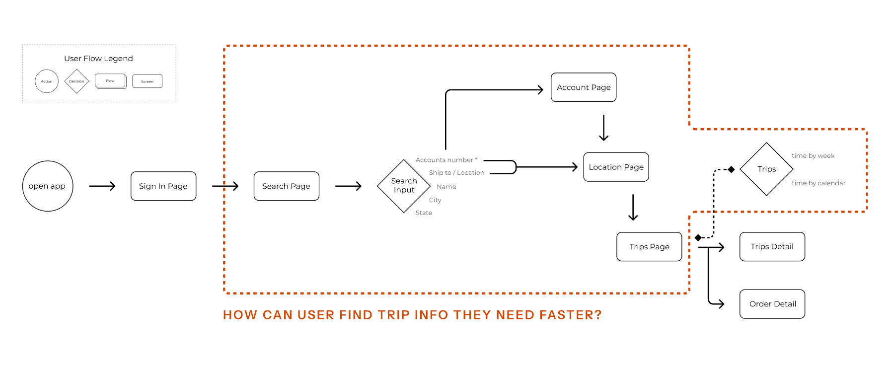
The original seven-step path from sign-in to a single trip detail.
Testing
What testing surfaced
I ran two rounds of usability testing across the redesign, and they pointed at the same two problems every time.
Users lost the thread of where they were and why, somewhere between opening the app and the one answer. People hesitated in front of five empty fields, backed out, or guessed wrong and started over.
Pain point 1
Complex Navigation
Users must navigate through a cumbersome process before reaching the trip detail page, causing frustration and inefficiency.
Pain point 2
Overwhelming Input Requirements
One of the search pages requires users to fill out five input fields, making the process overwhelming and confusing, leading to potential user drop-offs.
Pain point 3
Lack of Branding
The current app design does not align with Ashley Furniture's branding, resulting in an inconsistent visual identity that diminishes brand cohesion and recognition.
02The redesign
Navigation
Collapsing the path
Once the problem was framed that way, the direction was almost forced. If the job is "find this delivery," the design goal is the shortest honest path from opening the app to seeing it.
I restructured the flow so the app opens toward that job rather than routing users through account and location screens they never asked for, and rebuilt the eleven key screens along that path so each one moved the user forward instead of sideways.
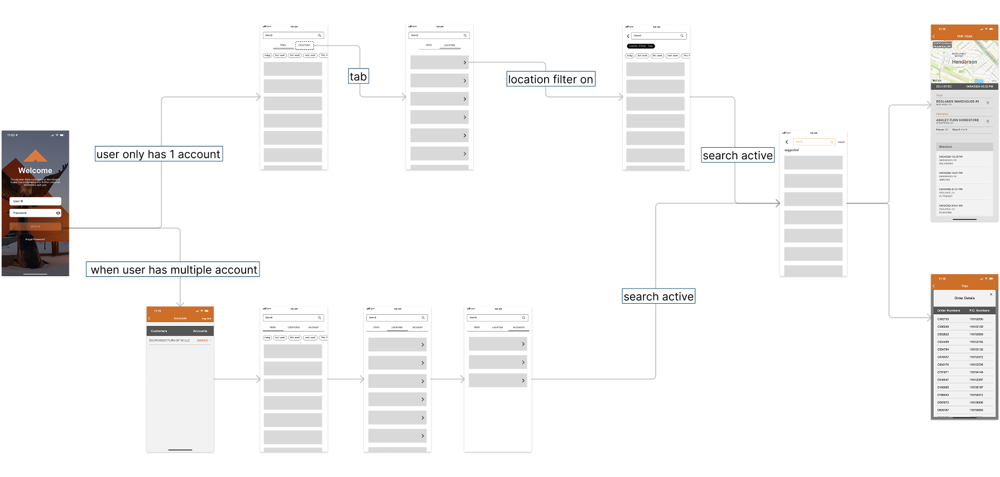
Seven steps reduced to three.
Search
Replacing a form with a choice
The five-field search needed a different fix, not a shorter one. Typing is recall — it asks the user to produce information from memory. Choosing is recognition — it shows the options and lets the user point.
Recognition is nearly always the cheaper cognitive move, and it fit this audience exactly: a store owner narrowing down a delivery is far better at recognizing the right trip than at reciting its parameters.
So the form became a set of visual filter capsules. Instead of five empty fields, the user taps to narrow — by the dimensions that actually distinguish one delivery from another — and watches the list shrink toward the trip they want.
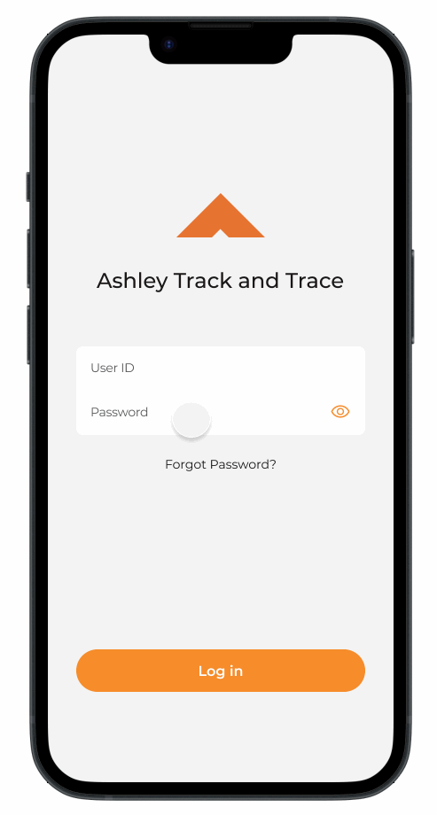
Final Design for single account route
03What outlived the engagement
The rest of the work
The other half: the design system
The redesign only holds together if the pieces do, and the existing kit had drifted from Ashley's brand. Alongside the flows I refreshed the mobile design system — sixteen components rebuilt and five type styles updated against Ashley's latest brand.
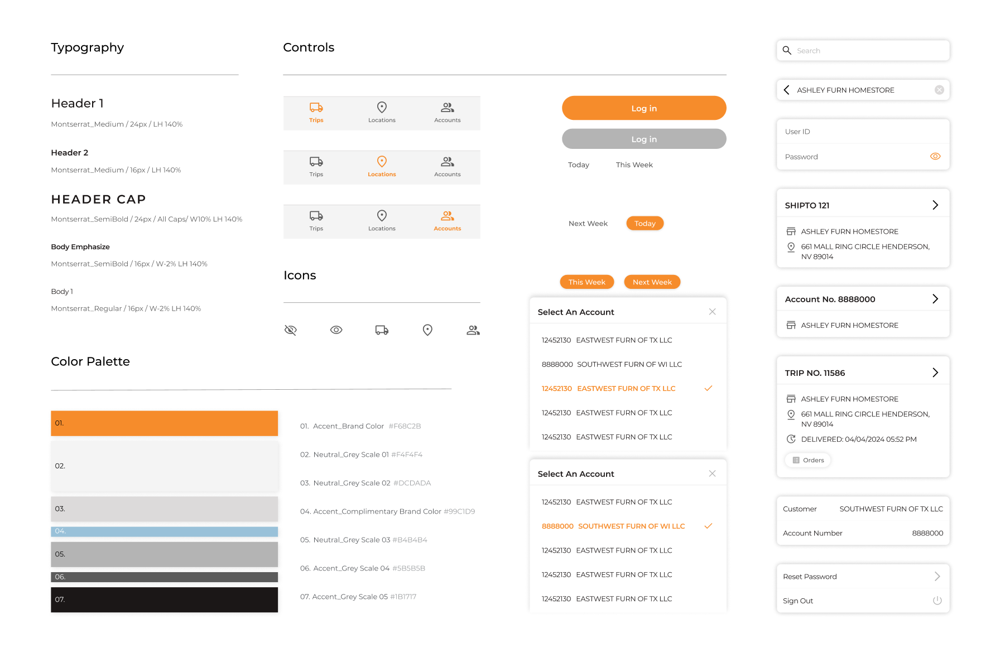
I handed that system to Ashley's own mobile team, where it was folded into their library and became the foundation their later work built on. In a short engagement, that mattered as much as the flows.
04Takeaway
In closing
What stayed with me
The old app wasn't badly built — it was badly aimed.
Its screens were organized as though sign-in, search, account, and location were places users wanted to go, when they were only ever obstacles between the user and one piece of information.
Measure a utility app by a single distance: how far is it from opening the app to the answer? Everything else is negotiable; that distance is the design. And wherever the app still has to ask the user for something, ask them to recognize, not to recall.
As the only designer on a machine-learning team, I built the interface around an AI comparison tool — making a slow, invisible process trackable, and making sure the comparisons it ran actually meant something.
P&G owns 65 brands, and every one of them ships package artwork in a constant churn of variants, sizes, languages, and yearly refreshes.
Small errors hide in that volume: a logo that shifted, a claim that drifted from the approved template, a barcode that changed between revisions. Catching them was manual, slow, and easy to get wrong.
The project was an AI image-recognition tool to do that checking automatically — feed it two pieces of artwork and it highlights where they differ. I was the UX designer on it, and the only designer on a nineteen-person team that was otherwise almost entirely machine learning: three senior data scientists, seven more data scientists, a couple of API developers, an Azure lead.
Over eleven weeks we took all three use cases from nothing to a shipping phase-1 MVP, training the model on 450+ artwork samples so it could recognize the pieces that mattered — labels, logos, tags — and compare them apple to apple.
1 of 19
Only designer on an ML team
11 wks
Zero to phase-1 MVP
10,000+
Employees on the shipped tool
~80%
Less time to check artwork
01The shape of the work
Use cases
Three questions, one comparison
The work organized around three kinds of comparison, each answering a different question:
On the surface all three are the same task: put two images side by side, show what changed. The model was good at that part. But a model that can spot every difference between two images is not yet a tool anyone will use every day. The gap between the capability and the product showed up most sharply in the second use case — the lineup compare — which is where I spent most of the project.
Use case 1
Final Art VS. Template
compare final art and template to re-verified the final design
Use case 2
Lineup Compare
compare lineup package design in the same collection to make sure the style consistency
Use case 3
New Concept VS. Predecessors
compare new concept and predecessors for the same product to see the evolvement
02Meaning
The insight
What makes a comparison mean anything
The lineup compare drew the most testing and the most argument between me, the business analyst, and the stakeholders. The first version of its flow was simple and linear: pick a brand, upload a few files, compare. Clean on paper.
But the first round of usability testing and interviews turned up three pain points the linear flow couldn't hold. People didn't run one comparison — they cross-compared within a set of ten to twenty files, over and over. They struggled to keep track of which file was which variant and size. And they couldn't remember which comparisons they'd already submitted.
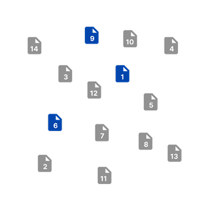
🔍 Insight 1
Cross compare within 10-20 files over and over again.
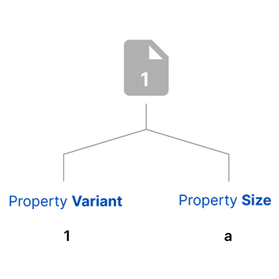
🔍 Insight 2
Only compare files holds the same properties.
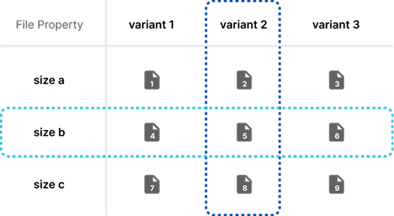
🔍 Insight 3
Each compare is tied to a specific property. This means that every comparison evaluates a distinct attribute, ensuring meaningful results across the board.
03Outcome
Scoping
Cutting to what mattered
The full version of that table was more than phase 1 could afford — auto-populating files, smart filters, auto-sort. So I mapped every feature against two axes, what mattered to users and what was feasible on the timeline and budget, and cut to the part that carried the insight: a table the user drives, marking what to compare, rather than an engine left to guess. The ambitious features went on a later-phase list. The version that shipped kept the one thing that mattered — the property structure made visible — and let the rest wait.
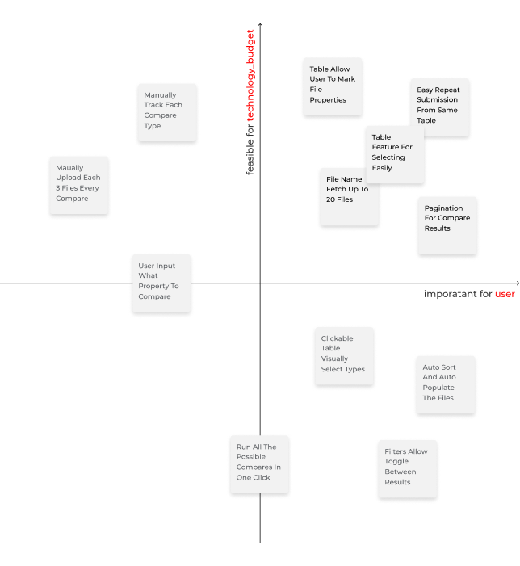
The prioritization plot: the clickable property table lands in the high-value, feasible zone; auto-populate, filters, and auto-sort wait for a later phase.
Design
Working out the table
Deciding on a table settled what to build, not how it should behave. I sketched two structures before committing.
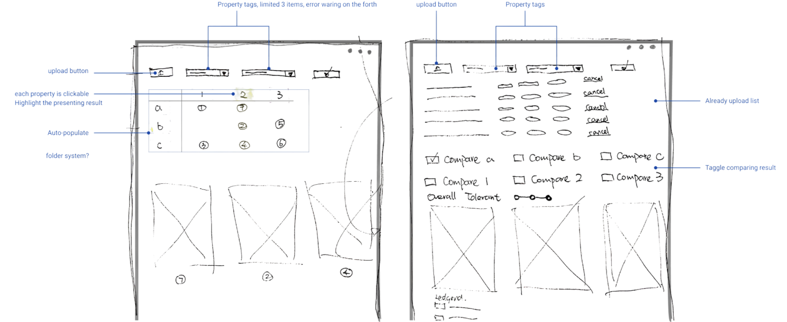
Two sketch directions: a clickable property grid, and an upload list with explicit compare toggles.
The first laid the files out as a matrix — variants across the top, sizes down the side — with each property header clickable, so the axis you were comparing along was visible in the layout itself. The second kept a running upload list and made every comparison an explicit choice: tick compare a,compare b, set an overall tolerance, toggle which results to show. The grid expressed the insight directly — the shared property was the structure — so it won the core. But the second sketch was solving the other half of the problem, the part the insight didn't touch: people weren't losing time on what to compare so much as on re-uploading the same twenty files and losing track of what they'd already run. So I took the grid's property structure and folded in the list's memory.
That changed the flow, not just the screen.
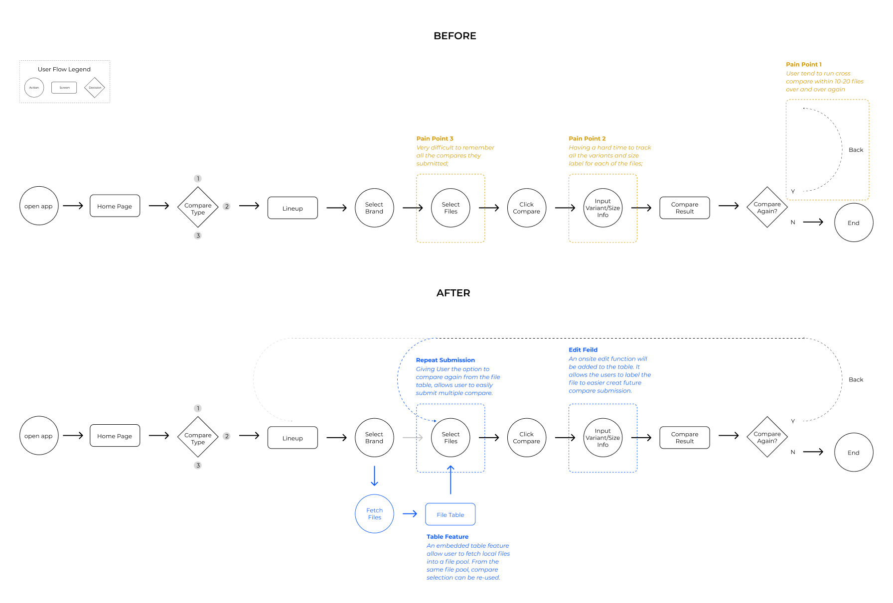
Before and after: the linear upload flow gains a persistent file pool, inline labeling, and one-tap re-submission.
Each of the three pain points got a specific answer in the flow. Cross-comparing the same ten-to-twenty files over and over became a persistent file pool you fetch into once and compare from repeatedly, instead of re-uploading every time. Losing track of which file was which variant and size became an inline edit field for labeling files right in the table. And forgetting what you'd already submitted became a one-tap re-submit straight from the pool. The table stopped being just where you set up a comparison — it became where the whole set lived between comparisons.
Shipped
What shipped
The shipped lineup tool.
The tool shipped in Q4 2022. It went to more than 10,000 P&G employees managing artwork across the company's 65 brands, and it cut roughly 80% of the time the checking process used to take.
04Takeaway
In closing
What stayed with me
Two lessons, and they still travel together.
The first is about comparison itself: a difference only means something against a background of sameness. A figure needs a ground. The model could find any difference between any two images; the design's real job was making sure the two images shared a property worth holding constant — otherwise the tool was just generating noise faster than a person could read it.
The second is broader, and it's the one I keep meeting in AI work since. A model's raw capability is not a product. Between "the system can do this" and "a person will rely on this every day" sits everything the model can't do for itself — making an indiscriminate process meaningful, and making a repeated one manageable at scale. As the only designer on a team of data scientists, that gap was the whole job. I've been designing in it ever since.
A five-person startup renting furnished homes to families moving to Austin — almost no inventory, and social ad rules blocking the exact audience we needed. I did the brand, the design system, and the renter flow. The design problem was getting a stranger from an ad to a real inquiry.
WayHome ATX rented fully furnished homes to families moving to Austin for a few months at a time.
The transitional window between leaving one city and settling into the next. Austin was the fastest-growing metro in the country then, and a lot of that growth was families arriving from out of state before they'd figured out where to actually live.
I joined as one of three designers on a five-person team: a founder who also wrote the code, a real estate expert, and three of us on UI/UX. Over two sprints in late 2021 we took the product from nothing to a live site. I owned the home page and the full renter flow.
On paper this was a rental portal. In practice, the design problem was acquisition. A startup with almost no houses and no marketing budget doesn't fail because its screens are ugly — it fails because no one ever reaches them.
0 → live
Two sprints, late 2021
+120%
Click-through, A/B tested positioning
19 + 7
Components & type styles, built from scratch
Nov 22
First real renter inquiry, 2021
01The constraint
Inventory
No listings to list
WayHome had a handful of houses, not a catalog — and a classic chicken-and-egg underneath it: you need renter demand to justify signing more properties, but you need properties to attract renters.
So instead of a browse page, the home page led with a short survey. A renter tells us what they need, an admin curates matching homes on the back end, and we email a custom shortlist. The survey did double duty — it screened for real intent.
Where to put the survey was its own small argument. I tested a few entry points, and a pop-up modal won — direct, aligned with the "we'll send you a custom list" model, and easy to grow into a real listings page once there was inventory.
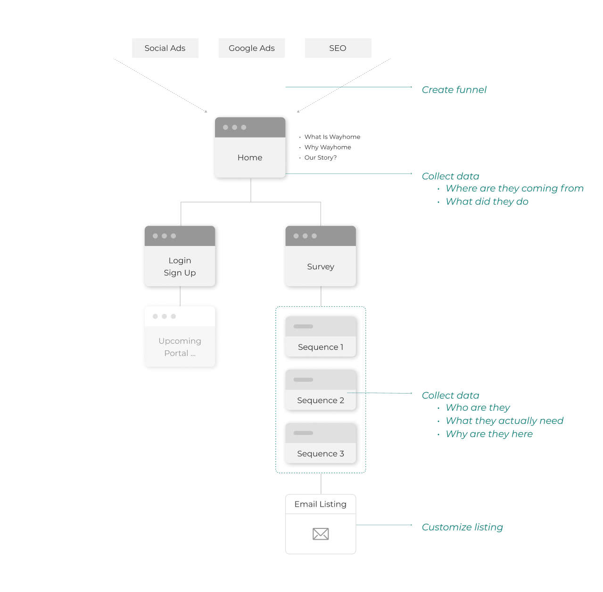
The survey-first home page, standing in for a catalog that did not exist yet.
02Designing the funnel
Brand
A brand that converts
Because I was building the brand from scratch too — logo, colors, email templates, the ad creative itself — I could treat it as part of the funnel rather than decoration.
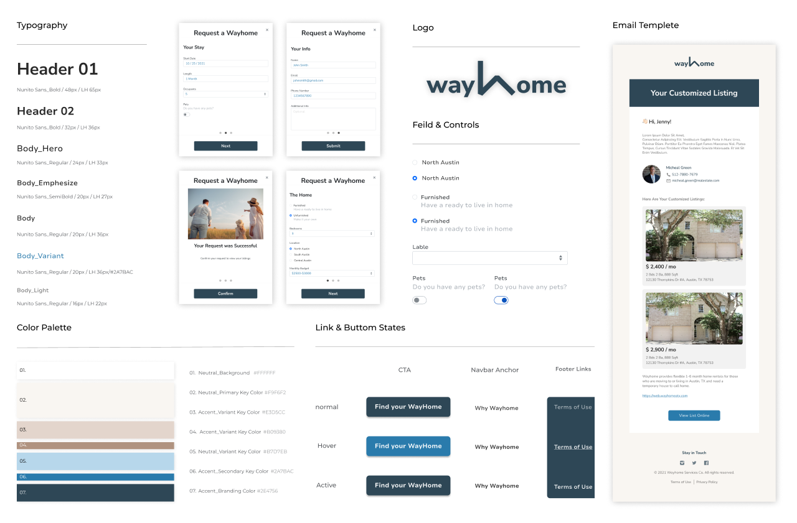
The design system underneath was small and practical: seven type styles, nineteen components, three neutral and four accent colors, shared across the marketing site and the portal so a lead never felt handed off between two different products.
"Small and local" read as trustworthy where "polished" read as risky.
The test that mattered was on positioning. We ran two rounds of A/B testing on the ads and landing page, and the version that leaned into WayHome as a small, local business — not a slick national platform — lifted click-through by around 12%.
Analytics
Reading the drop-off
Once the site launched, I watched behavior in Google Analytics, and one pattern stood out: people started the survey and stopped at the location question. Our search and ad keywords were generic — "house rental near me" and the like.
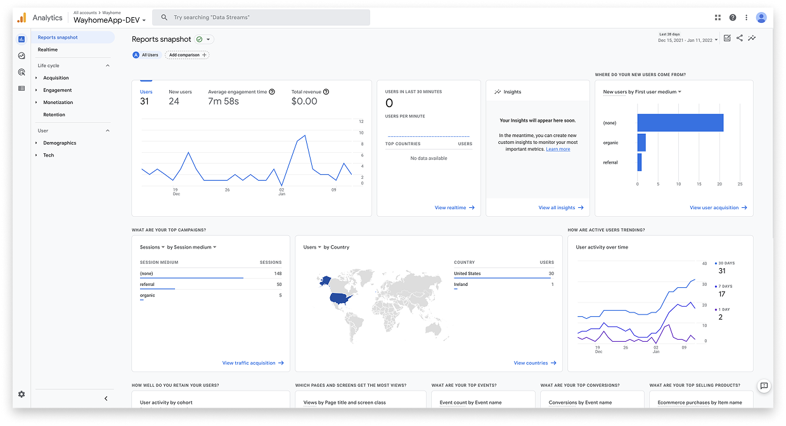
The fix was in the words, not the screens. We rewrote the SEO and ad copy to lead with "Austin, TX" and dropped "near me" entirely, since our audience was not nearby — they were trying to move here. Traffic got narrower and better.
The rule we couldn't beat
The ad we weren't allowed to run
Housing is a protected category in social advertising, which means you can't target ads by location the way most local businesses do. Our whole plan — paid social aimed at people moving to Austin — was off the table.
The workaround came from watching where people already asked for help. Families relocating were posting in Facebook groups: "moving to Austin in March, any leads on a furnished rental?" Sharing a listing into a group like that is not a targeted ad.
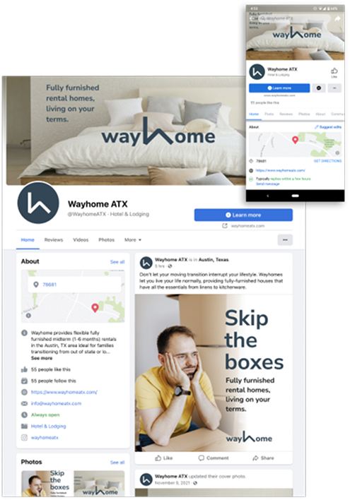
So I designed a share feature into the listing pages, and we started seeding real homes into those groups. It stayed inside the rules, and it worked: inquiries came through social within a couple of weeks.
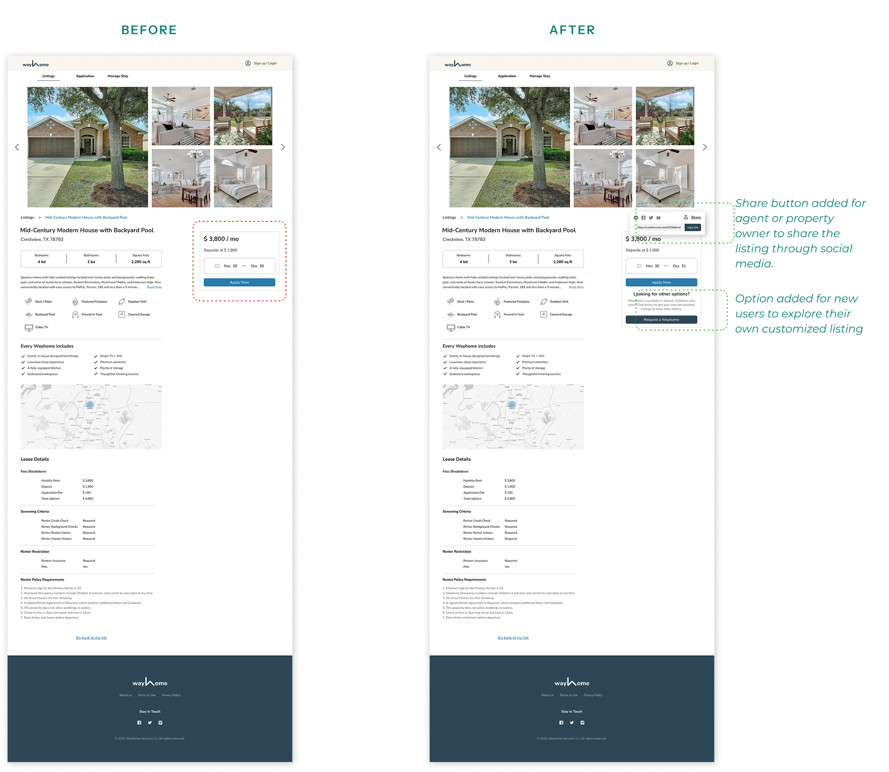
03The product
Sprint two
The rest of the build
The second sprint pushed past acquisition into the product itself. Mapping the full experience surfaced three distinct users whose flows fed each other: a renter's application shows up read-only in the owner's portal; a partner can list a property into the pipeline.
Renter: inquiry, application, and managing a stay — the flow I owned end to end. Owner: listing a home and reviewing renter applications read-only. Partner: listing a property and handing it off into the WayHome pipeline.
Three user types, one connected pipeline.
Testing kept correcting me in useful ways. The smallest example that stuck: renters didn't want to pick an exact bedroom count. Someone who needs three bedrooms happily considers four. So the filter became a range, not a number — obvious in hindsight, invisible until a real person hesitated in front of it.
04Takeaway
In closing
What stayed with me
Find the real constraint before designing anything, because that's usually where the design actually is.
This was my first time designing something that had to survive contact with a real business. On a team that small there's no line between "the design" and "the business" — the brand, the funnel, the keywords, the workaround for an ad rule were all the same job, and the bottleneck was never the pixels.
Here the constraint was acquisition, and twice the best answer was to take a rule working against us and build with it instead of around it.
Pipeline engineers were losing hours to a six-tab input form. I argued against the easy restyle, redesigned the data entry around how pipelines actually work, and the result became the foundation the product grew on.
InnerVue is a Halliburton service that diagnoses pipelines without opening them.
A technician arrives at a rig with everything packed in a Pelican case, connects a device to the pipeline, sends a pressure pulse through a valve, and records how the pulse behaves. That recording travels to engineers in Houston, who run it through calculations to find deposition and blockage. The final analysis goes to Halliburton's clients as a report.
I spent two years as the sole designer on this product, embedded in a 19-person cross-functional team through Capgemini. My work covered all three surfaces of that journey: a 0-to-1 field portal for the technicians collecting data, the internal portal where engineers run the analysis, and the client-facing report portal.
2 yrs
Sole designer, 3 portals
1,000+
Engineers on the shipped table
108
Field users on Edge Portal
$2M
Funding secured for the project
01Understanding the problem
The material
A pipeline is not a tube
Most people picture a pipeline as one long, constant pipe. An actual Piping and Instrumentation Diagram tells a different story.
People picture a pipeline as a tube. One diameter, one length, one set of numbers to enter.
Real lines change diameter along their length. Every change is another full set of parameters, entered by hand.
Count the places the engineer has to re-enter everything. That count — not the table — was the real problem to design against.
What a real line looks like: the diameter changes along its length, and every change is another full parameter set.
A pipeline is closer to a net — junctions everywhere, and the diameter changes constantly along its length. That physical reality drives everything about the analysis.
The calculation needs a full parameter set — diameter, acoustic velocity, density, viscosity, elevation, deposition thickness — at every point where the pipe changes. So before an engineer can run anything, they have to describe the physical pipeline to the software. That data entry step is where the product was losing them.
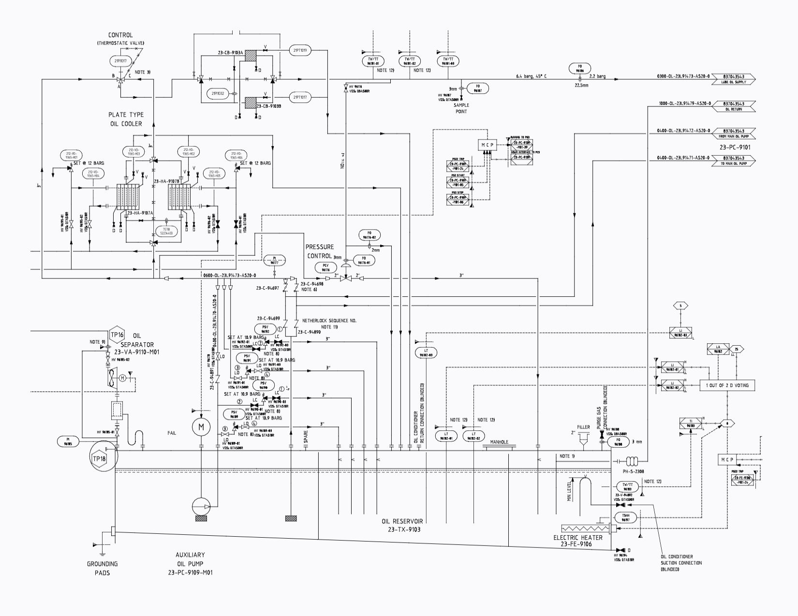
The argument
Six tabs, and the fix that wasn't
The existing input UI split those parameters across six tabs — one per parameter type. Engineers told us in feedback it was extremely time-consuming, and the product owner proposed the obvious fix: restyle the fields, make them more readable.
I didn't think readability was the problem, and said so.
On our prioritization plot, restyling was a quick, low-impact iteration; reinventing the input component was high effort and high impact — a bet.
What justified the bet was the roadmap: the product's long-term vision involved handling increasingly complex pipeline scenarios, and all of them would sit on top of this input flow. Spending the effort once, here, would compound.
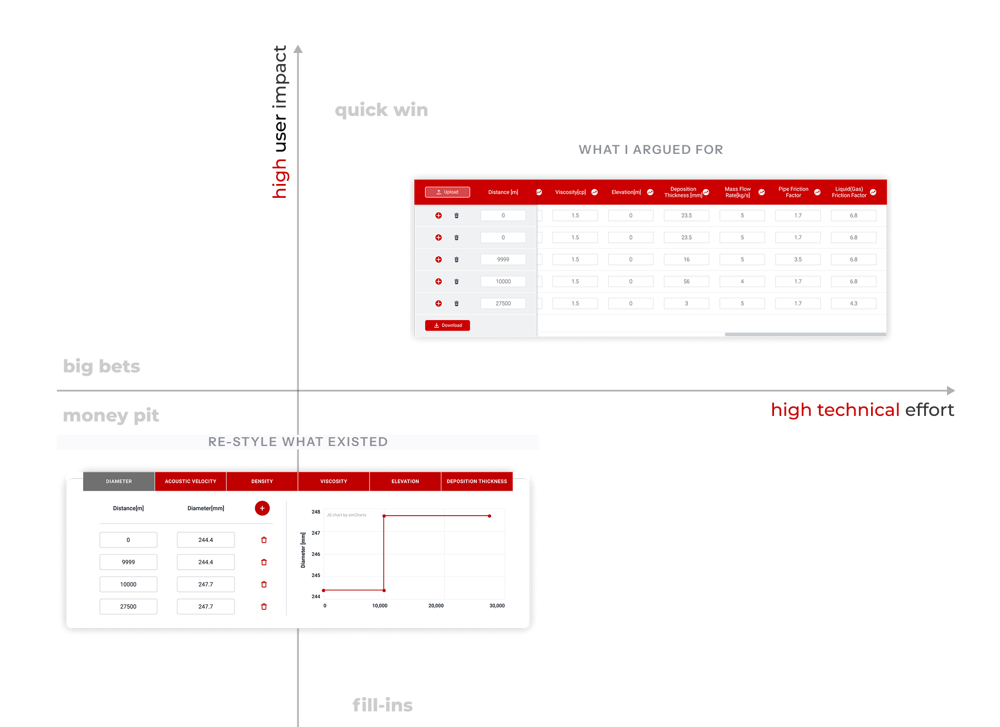
Restyling sat in the low-impact quadrant; reinventing the input was the high-effort, high-impact bet.
02Making the case
The insight
The insight underneath
To make that case properly, I ran a round of usability testing and interviews. The pattern was immediate: engineers were constantly jumping back to the first tab, “Distance,” because every parameter in every other tab refers to it.
The six tabs mirrored how the data was stored, not how engineers think.
To an engineer, a pipeline is one continuous object where everything is a function of distance. Splitting it into tabs shattered that mental model and forced them to hold it in their heads while clicking back and forth.
A parameter set: the vector of values that has to be solved at that one distance
Every tab's values key off the Distance tab.
Once I saw that, the design was almost self-evident: a single table. Distance as the anchoring first column, every parameter in a row beside it, so an engineer can see, edit, and cross-reference the whole pipeline profile on one screen.
Testing
Three ways to handle overflow
A full parameter set is wider than any screen, so the real design question was overflow. I brought three options to testing.
Option 2 won clearly — fewest clicks, fastest route to any value, fastest input time. Pinning Distance kept the anchor visible no matter where you scrolled, which is exactly what the mental model needed.
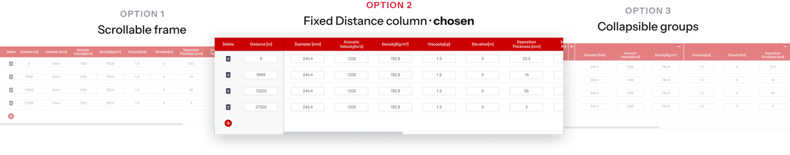
03What it grew into
The payoff
The bet pays off — twice
The reason to reinvent rather than restyle was that the roadmap would build on this foundation. Later in 2023, it did.
Capturing a diagnostic blind spot close to the valve. Because the table was already structured around distance-keyed segments, this was a minor adaptation of the existing component rather than a new build — which saved significant development time.
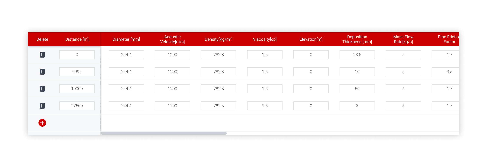
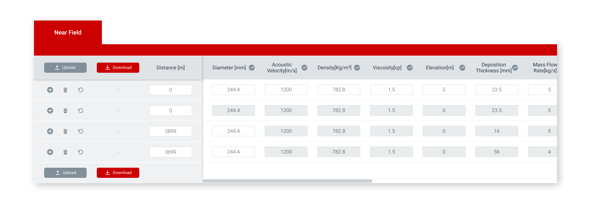
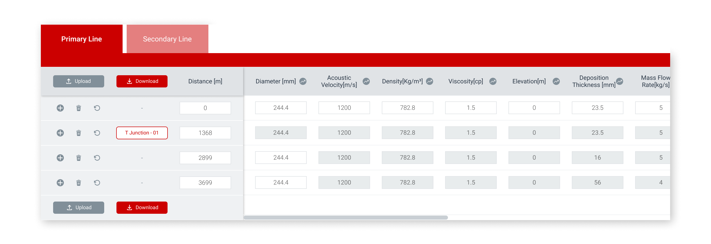
One distance table reused across primary line, near field and junction.
The harder one. Real client P&IDs meant as many as 50 junctions in a single analysis — secondary pipes branching off the primary line, each with its own full parameter profile.
The table grew into a complex, multi-line input — primary and secondary lines as linked tabs, junctions marked inline at their distance points. A form built around six parameter tabs could never have absorbed this. A table built around the structure of the pipeline itself absorbed it naturally.
The rest of the work
Around the table
The input redesign is the story I care most about, but it was one thread of two years of work across all three portals.
Edge Portal · 0-to-1
The software technicians use on the field compute device to run surveys and capture clean data — now in the hands of 108 field users. Over 14 presentations to business stakeholders, the work secured $2M in funding, and along the way I helped steer the pivot from a technician-only tool to a multi-platform approach with pre-field simulation and cloud-integrated post-field reporting.
Client Portal · 3D features
I led three 3D features — a deposition graph, a deposition projection, and a blockage report — that let pipeline integrity managers see predicted blockage inside their own pipe. Clients reported them the easiest to use among all competitors, and they became a genuine sales tool for future service contracts.
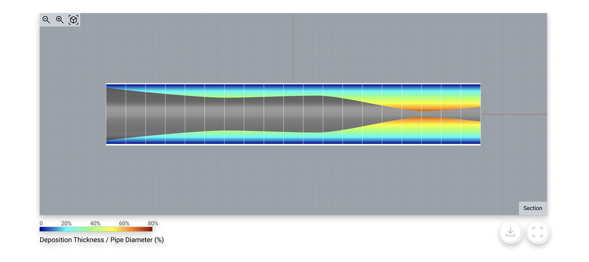
The 3D deposition report: blockage prediction rendered inside the pipe, with a timeline of surveys.
04Takeaway
In closing
What stayed with me
Ask what structure the work has, not what structure the data has.
The six tabs weren't wrong by accident — they faithfully mirrored the database. They were wrong because engineers don't think in database tables; they think in pipelines.
Nearly every design decision that worked here came from studying the physical system — pressure pulses, diameter changes, junctions — until the interface could be shaped like the thing it describes.